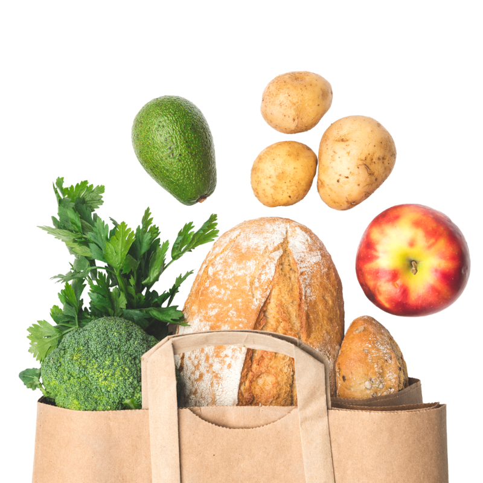

MAIZE & BLUE CUPBOARD
To ensure members of the University of Michigan community—whether on a tight budget o r physically restrained from getting to a grocery store—receive equitable access to h ealthy, nutritious, and nourishing food and the ability to prepare it for themselves or others.
MAKE AN APPOINTMENT NOW

FOOD
Produce, dairy, meat, bread, frozen and shelf-stable foods (i.e. rice, cans, tuna, etc.)
KITCHEN & COOKING
Dishes, silverware, pots & pans, Tupperware, cutting boards, knives, and other kitchenware
PERSONAL & HOUSEHOLD
Trash bags, toilet paper, cleaning supplies, hygiene products, school supplies, baby items and more
SUPPORT
Get connected to campus experts like CAPS, Dean of Students and Financial Aid, as well as SNAP (Michigan's food program)